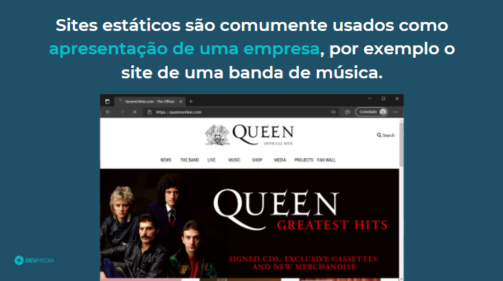
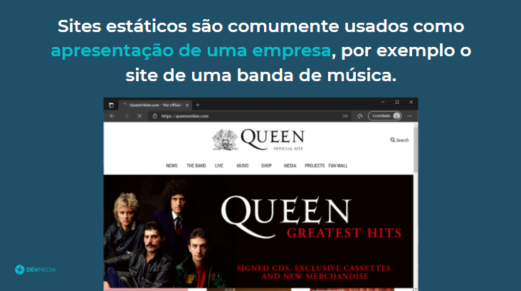
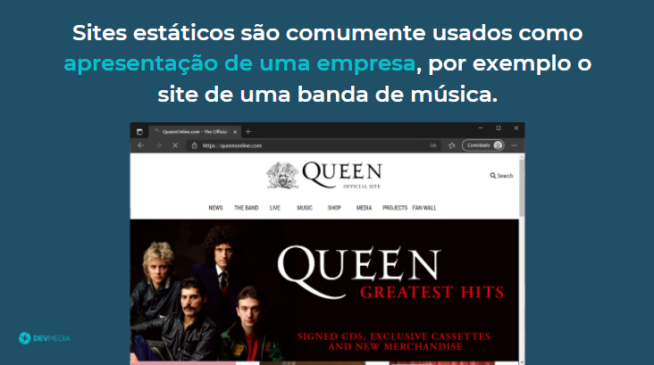
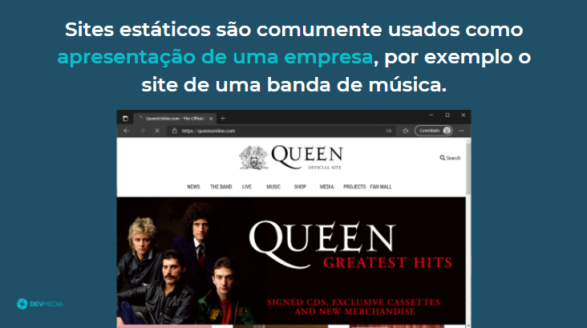

 

No flow abaixo vamos analisar o site Vale Gás:


Site estático não precisa que seu conteúdo seja sempre atualizado

Site dinâmico precisa de um back-end para guardar as informações e exibir em tempo real, ou seja, é um site onde as suas informações estão sempre mudando, por exemplo um site de vendas que precisa exibir produtos disponíveis em tempo real


No começo criamos sites estáticos, ou seja, sites que não precisam de atualizações dinâmicas, com o tempo, prática e aprendizado criamos sites dinâmicos, ou seja, que o seu conteúdo muda em tempo real